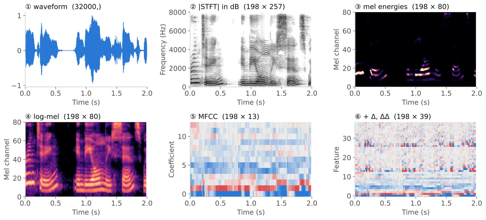

في Lecture 2 شفنا الـ spectrogram كصورة جاهزة. النهارده هنبنيه بإيدنا خطوة بخطوة، وبعدين نكمّل لحد الـ log-mel والـ MFCC، اللي هما الـ input الحقيقي للـ models. كل مشهد بيضيف خطوة واحدة على الـ pipeline.
ده الطريق اللي هنمشيه. دوس على أي خطوة تروح لمشهدها:
أول حاجة: ليه أصلاً نقدر نشوف الصوت كـ frequencies؟
فكرة Fourier: أي signal ممكن تتكتب كمجموع sine waves، كل واحدة ليها frequency وamplitude وphase. والـ spectrum هو قايمة بالـ frequencies الموجودة وقوة كل واحدة. يعني نفس الـ signal، بس بنوصفها بطريقة تانية.
فوق: الـ waveform (الوقت). تحت: الـ spectrum (الـ frequency). الاتنين نفس المعلومة.
طب لو معانا الموجة بس، نطلّع منها الـ spectrum ده إزاي؟ ده شغل الـ DFT.
اقراها كده: x[n] هي الـ frame (فيها N sample)، وe−j2πkn/N هي probe wave بتلف k مرة جوه الـ frame. اضرب الاتنين sample sample واجمع. لو الـ frame فيها الـ frequency دي، الضرب بيطلع في نفس الاتجاه، والمجموع بيكبر. لو مش فيها، الموجب والسالب بيلغوا بعض.
الـ frame فيها 3 cycles قوية و7 cycles أضعف (N = 32).
|X[k]| = قد إيه الـ frequency دي موجودة. والـ probe الحقيقي complex (cos و sin مع بعض)، فالـ phase ما بيفرقش. هنا بنرسم جزء الـ cos بس عشان الصورة تبقى أوضح.
الحسبة دي لكل k بتاخد وقت. فيه طريقة أسرع بكتير.
الـ FFT بيحسب نفس الـ DFT بالظبط، بس في O(N log N) بدل O(N²). والـ radix-2 FFT محتاج N تبقى power of 2.
الـ frame 25 ms عند 16 kHz يعني L = 400 sample. أقرب power of 2 فوقها هي N = 29 = 512، فبنكمّل بـ 112 صفر. (Whisper بيستخدم N = 400 على طول.)
ليه N/2 + 1 بس؟ عشان الـ signal real، فالنص التاني من الـ bins صورة في المراية من الأول. بنحتفظ بـ k = 0 … N/2، يعني من 0 لحد fs/2.
تمام، نعمل DFT للجملة كلها مرة واحدة وخلاص؟
بص على الـ signal دي: تحت الأول وبعدين فوق، والتانية العكس. الـ magnitude spectrum بتاعهم:
نفس الـ spectrum بالظبط! الـ magnitude بتقول أنهي frequencies موجودة، بس مش إمتى. التوقيت مستخبي في الـ phase، والـ phase إحنا بنرميه. ولو عملناها على جملة كاملة، كل الـ vowels هتتخلط في بعض.
الحل: spectrum لكل frame قصيرة، الـ signal جواها شبه ثابتة. وساعتها الترتيب يبان.
نقطّع إزاي بالظبط؟ بالأرقام.
عند fs = 16 kHz
قطّعنا. بس طريقة القطع نفسها ليها تمن مستخبي.
قطع الـ frame = ضرب الـ signal في window قيمته صفر بره الـ frame: y[n] = w[n] · s[n]. أبسط واحد هو الـ rectangular: سيب الـ samples زي ما هي جوه الـ frame، وصفّر الباقي. ده اللي كنا بنعمله من غير ما ناخد بالنا.
الـ bins بتقع عند عدد cycles صحيح: الـ bin رقم k = بالظبط k cycles. خلّي الـ slider على 3: النسخ بتركب على بعض ناعم، فيطلع spike واحد نضيف. وحطه على 3.5: يحصل قفزة، والقفزة محتاجة frequencies كتير عشان توصفها، فالطاقة بتسرّب (leaks) في كل الـ bins. جرّب بعدها Hann.
الـ Hann والـ Hamming بيعملوا إيه بالظبط؟
بيخلّوا الـ frame تقرّب للصفر عند الطرفين، فالنسخ تقابل بعض (تقريباً) من غير قفزة:
لـ 0 ≤ n ≤ L−1 (ده الـ periodic form زي librosa، وفيه toolkits بتقسم على L−1).
دلوقتي عندنا كل القطع: frame وwindow وDFT. نركّبهم مع بعض.
الـ x = رقم الـ frame (الوقت)، والـ y = الـ frequency من 0 لـ 4 kHz.
الـ signal: chirp طالع، وبعده نغمتين ثابتين، وبعده noise زي الـ /s/. عند fs = 8 kHz: L = 200 (25 ms)، وH = 80 (10 ms)، وN = 256.
الناتج complex matrix: صف لكل frame، وعمود لكل bin.
ناخد الـ magnitude ونحطه في صورة: ده الـ spectrogram. وفيه قرار لازم تاخده.
ما ينفعش تاخد الاتنين. window قصير يعني الوقت واضح والـ frequency مغبّشة، وwindow طويل العكس. نفس الـ signal ونفس الـ hop، والفرق في طول الـ window بس:
الـ spectrogram فيه 257 bin بالـ Hz. بس ودن البني آدم مش بتسمع بالـ Hz.
إحساسنا بالـ pitch تقريباً linear تحت 1 kHz وlogarithmic فوقها. يعني من 200 لـ 300 Hz نقلة كبيرة، ومن 6200 لـ 6300 Hz نقلة صغيرة جداً. الـ mel scale بيخلّي الخطوات اللي إحساسنا بيها واحد تبقى على مسافات واحدة:
ثبّت Δf = 100 Hz وحرّكهم لفوق: الـ Δmel بيصغر. ومن الأرقام المهمة: 1000 Hz ≈ 1000 mel، و8000 Hz ≈ 2840 mel.
نستخدم الـ scale ده إزاي على الـ 257 bin؟ بـ filterbank.
كده الـ frequency axis بقى perceptual. فاضل الـ energy axis.
الـ dynamic range: الـ vowel ممكن تكون فيها power أكتر من fricative ضعيف بحوالي 30 dB، يعني 1000 مرة. على scale خطي، أعلى حتت بس هي اللي تبان:
mel + log = الـ input الـ standard. وفيه نسخة أصغر منه كمان.
افتكر الـ source–filter من Lecture 2: الـ spectrum بتاع الـ vowel = ripple سريع من الـ vocal folds (الـ pitch) فوق envelope ناعم من الـ vocal tract. والـ phone نفسه موجود في الـ envelope. الـ MFCC بتوصف شكل كل log-mel frame بعدد صغير من الأرقام: كفاية للـ envelope، وقليل على الـ ripple.
| Log-mel | MFCC | |
|---|---|---|
| الأبعاد | 80–128 | 13 (أو 39 مع Δ وΔΔ) |
| التفاصيل | كل الـ channels، والـ network يتعلم يحتفظ بإيه | الـ envelope الناعم بس |
| الـ correlation | عالي بين الـ channels اللي جنب بعض | واطي، فمناسب للـ diagonal-covariance GMMs |
| بيستخدموه فين | الـ neural encoders (Conformer، Whisper) | GMM-HMM، والـ systems الصغيرة أو الـ low-resource |
تفاصيل الـ MFCC (cepstrum، وDCT، وdeltas) مطلوبة قراية في J&M Ch. 15.6.
نشوف الـ pipeline كله على جملة واحدة.

آخر مشهد: اختبر نفسك.
الـ spacing: 16000 / 512 = 31.25 Hz. والـ bins: 512/2 + 1 = 257. والـ frames: 1 + ⌊(48000 − 400) / 160⌋ = 1 + 297 = 298.
عشان نقرّب الطرفين للصفر، فالقفزة اللي بين النسخ المتكررة تختفي، والـ spectral leakage يقلّ.
k = f · N / fs = 1000 × 512 / 16000 = 32.
طويل. الـ frequency resolution تقريباً 1/L: لـ 15 Hz محتاج حوالي 67 ms أو أكتر. والتمن إن الـ timing هيتغبّش.
298 × 257، وبعدين 298 × 80، وبعدين 298 × 39.